SANDBOX ONLY · OCTOBER 29, 2026Vigil domain purchase & connection walkthrough
Actual application + local Supabase + Name.com sandbox + Stripe test. No real charge, production registration, production DNS change or release.
$17.99 registrar cost + $5.00 service fee = $22.99 test capture.
One order · one asset · one Stripe test charge · four mail/security records preserved.
What this provesThe actual local domain workspace completed sandbox purchase, payment capture, safe receipt recovery and sandbox DNS approval/application. Replays created no additional charges, registrations or DNS records.
Where this stopsEmail verification remains pending for the fictional address. Public DNS, HTTPS, a real Vercel project and the production dashboard/onboarding entry points are not accepted by this sandbox run. The production screenshot walkthrough remains separate.
Read acceptance evidence 1. Choose a setup path
The fictional Vigil client opens the actual domain workspace in the local Next.js app.
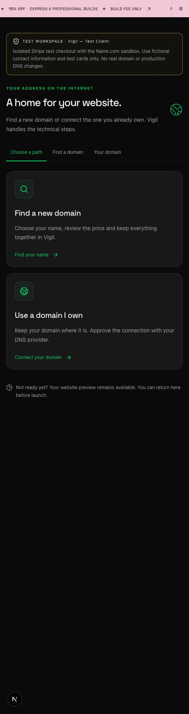
2. Requested domain unavailable
The sandbox correctly refuses vigil.com. The real registry also reports it registered. The test uses a separate sandbox-only name.
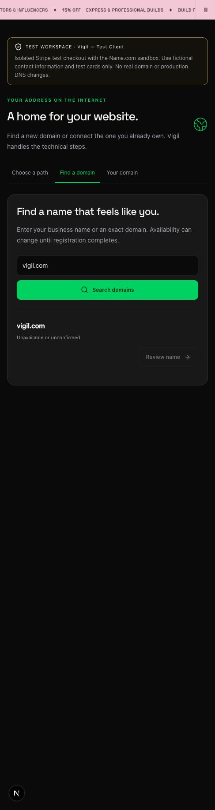
3. Search and first-year price
Name.com sandbox quotes $17.99; Vigil adds the approved $5 test fee, showing $22.99 to the client. The renewal estimate shown is $19.99.
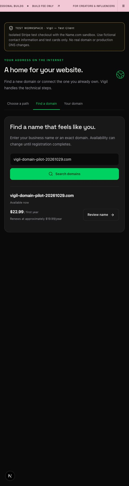
4. Registrant, itemized total and consent
Fictional client details, manual renewal, registrar disclosure and exact one-year $22.99 test approval. Tax is zero only for this fixture.
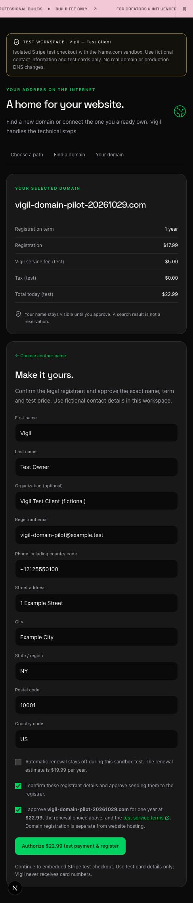
5. Restore the existing unpaid order
An interrupted checkout restored the same unpaid order. Resume reopened the same Stripe session; no replacement order or registration was submitted.
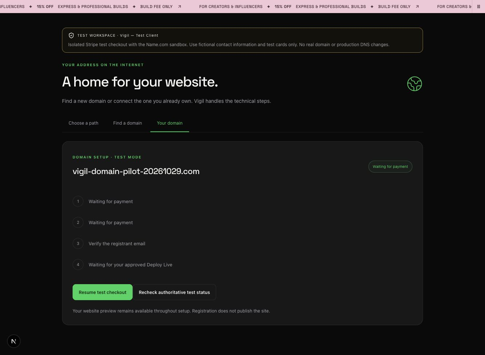
6. Embedded Stripe test checkout
Actual embedded Stripe Checkout shows $22.99 and Test Mode. Only Stripe test card details were used; this screenshot excludes entered card data.
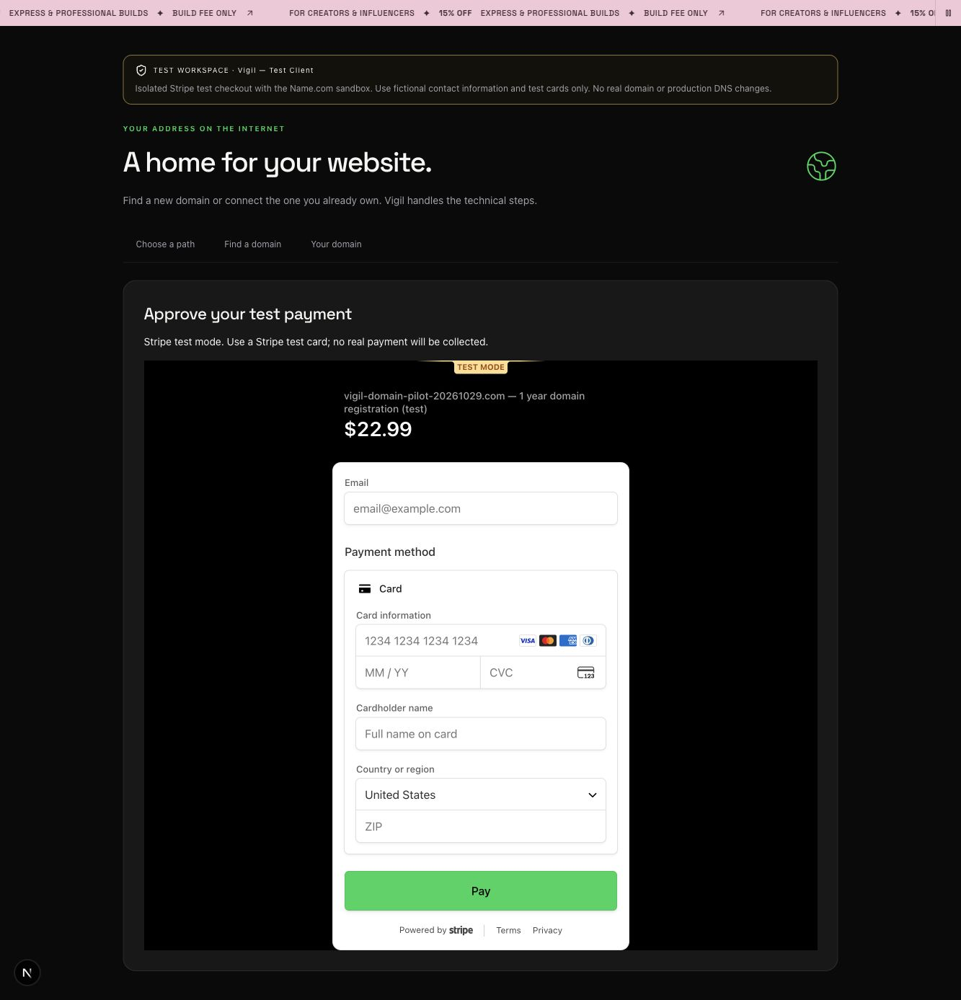
7. Stripe authorization accepted
Stripe confirms the test authorization. This screen alone is not capture proof; subsequent server reconciliation verified capture.
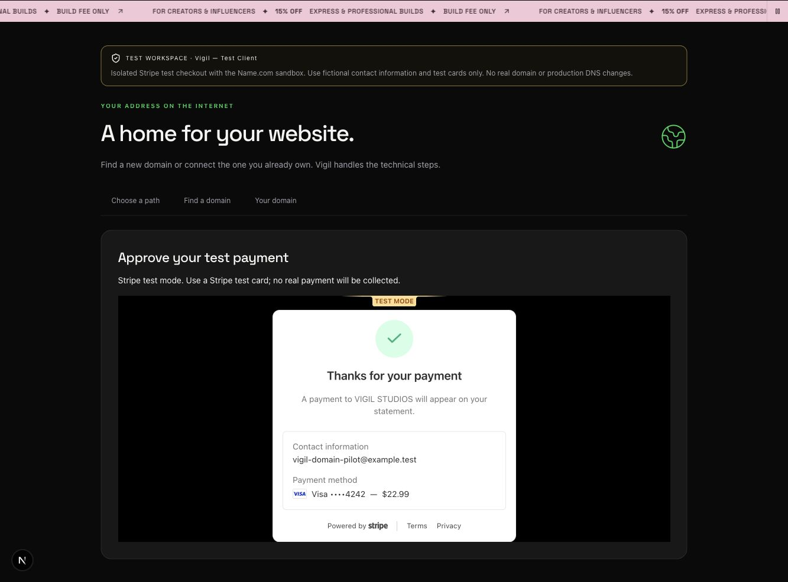
8. Uncertain registrar response handled safely
Name.com sandbox initially returned an uncertain result. Vigil paused and reconciled the original receipt, without another purchase.
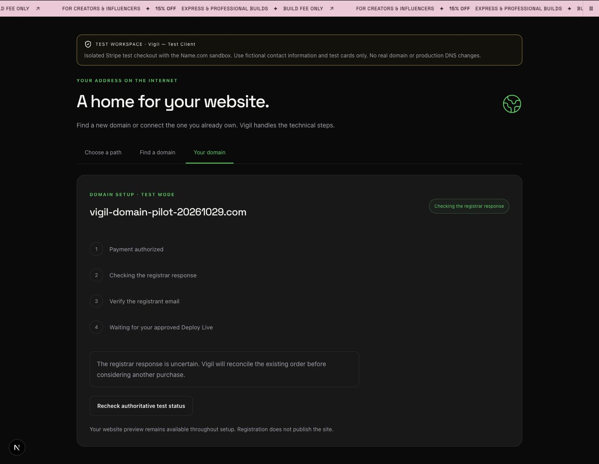
9. Registration and exact capture confirmed
The original receipt and approved owner reconciled. Vigil captured $22.99 in Stripe test mode and displayed registration, expiry, manual renewal and pending email verification.
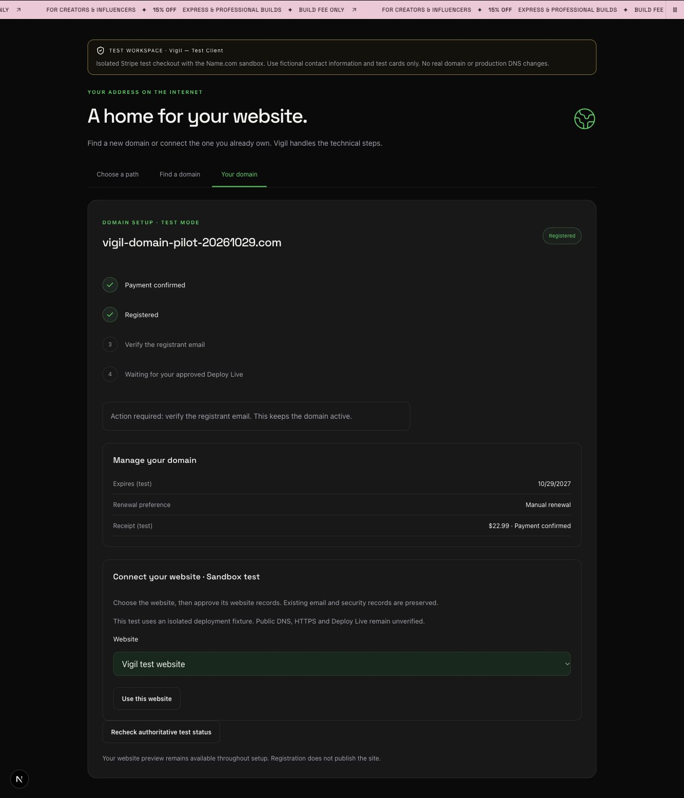
10. Choose the website
The paid registration is bound to the fictional Vigil website. Deployment recommendations come from the explicitly isolated test fixture.
11. Review exact website records
The client approves only the three shown website/proof records in the Name.com sandbox. The four existing mail/security fixtures remain outside the write plan.
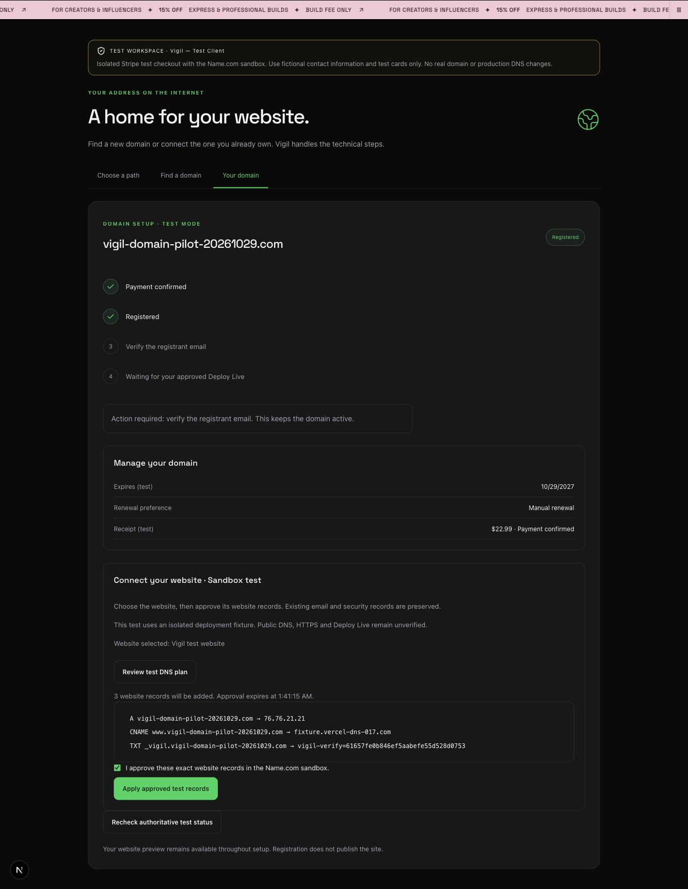
12. Sandbox DNS saved
The application saves the records and clearly retains pending public DNS, HTTPS and approved Deploy Live. It does not invent a live connection.
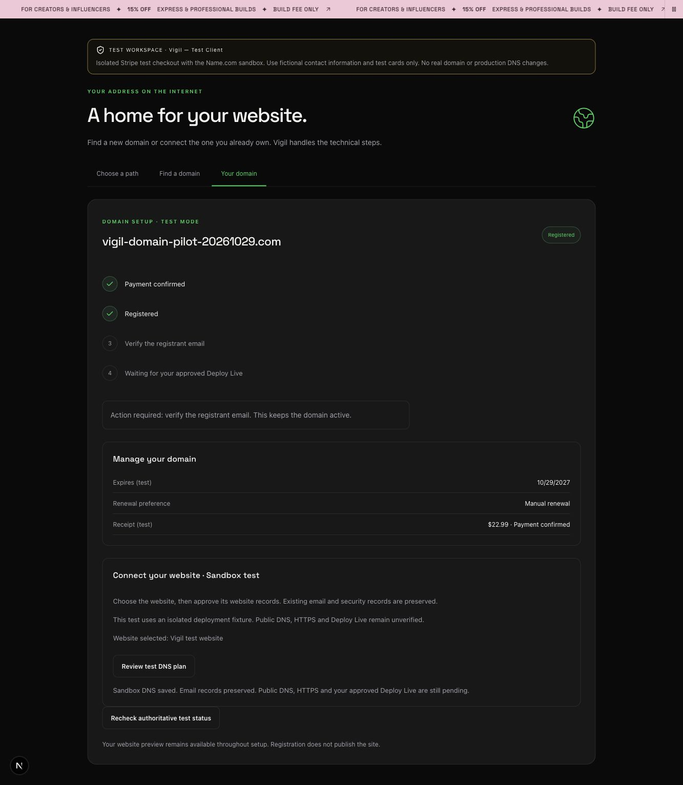
13. Mobile client view
The 390 × 844 viewport has document/body width 390px, with no horizontal overflow. This captures the same actual sandbox order.
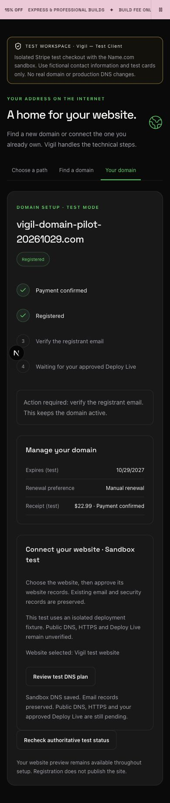